De Vegan Junk Food Bar, ook wel de VJFB is een restaurant keten door Europa heen. Ze hebben vier locaties in Amsterdam en ik ben wezen eten op Marie Heinekenplein 9-10. Bij de VJFB verkopen ze plantaardigen varianten van vette happen zoals; burgers, kapsalons en loaded fries.
Ikzelf ben al vier jaar vegatariër en dit restaurant trok mij erg aan omdat ze hier eten hebben wat je niet vaak plantaardig tegen komt als vegatariër of veganist. Ze hebben hier ook een menu zonder gluten en is ook goed gevuld!
